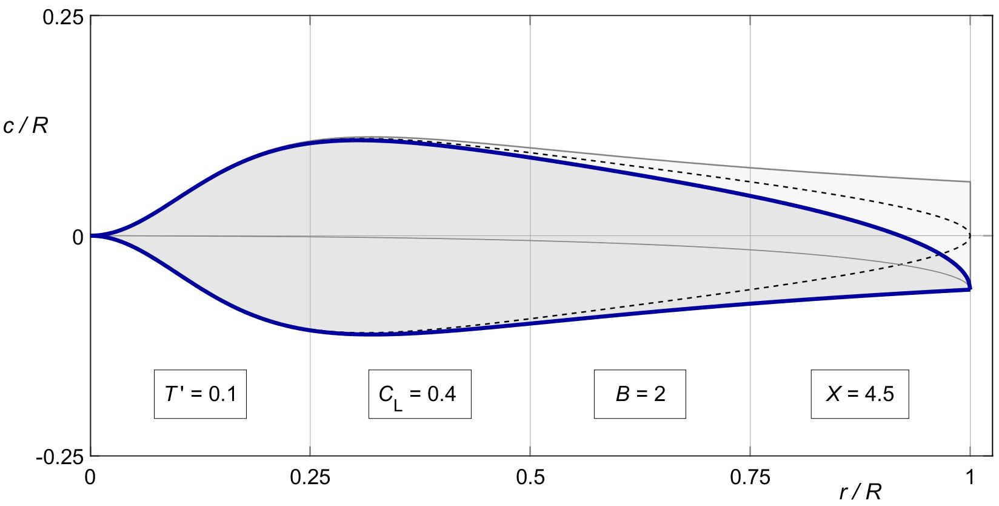
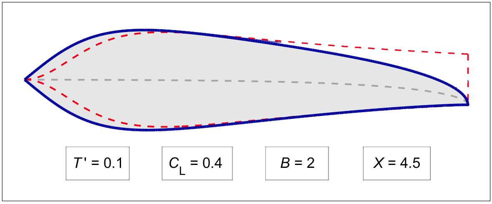

CHORDS
As a little extra, we mention a more or less "natural" way to add some sweepback to the blade tips. It is totally unscientific, but if nothing else, the results are aesthetically pleasing.
The increase of the lift force on a wing section with angle of attack acts at the quarter chord point. The classical wing planform is "straight" ( no sweepback ) at this point. The reason is not so much that the lift "applies there", because that is only true at high angles of attack. The main reason is more likely that classical wing sections have their maximum thickness at that point, or rather at 30 %, and it is convenient to locate a straight main spar at the point of maximum thickness. The 25 % point also makes the calculation of the aerodynamic center of the whole wing a trivial exercise. It will also be at 25 %.
Many propeller blades also have a straight centerline at 25 % chord, or sometimes at 50 % because this is where the lift applies in the blade section's design condition. However, even more than in wings, propeller blade centerlines are subject to practical constraints like bending moments, centrifugal forces, torsion, and aero-elasticity. From the early days, there has always been a school of thought, if only for reasons of laminated plank fabrication, to keep the blade trailing edge straight. This was called the "Chauvière" type propeller. A straight trailng edge gives a curved leading edge, effectively creating sweepback near the tips.
The same straight trailing edges are seen traditionally in aircraft fins and stabilizers, and today in aircraft wings as well. There is some evidence that a straight trailing edge gives a flatter beginning of the wake sheet, and slightly less induced drag than the 25 % chord "straight" wing.
In propellers, there may be a secondary advantage to the resulting tip sweepback. Even at moderate flying speeds, the blade tips can approach high Mach numbers with attendant noise and drag rise. Swept-back tips may help to alleviate these problems. In ships, they may help to shed cavitation bubbles.
A simple, though not necessarily optimal way to achieve some tip sweepback is by applying the tip reduction K ( x ) one-sided from the trailing edge forward, instead of symmetrically around the centerline. This keeps the trailing edge as it was before the tip reduction, like in figure 27.3.
We will show the idea first on a blade with Prandtl's tip shape ( 20.4 ). With this version of K (x) and κG, the chord ( 28.1 ). becomes :
| (29.1) |
Without the F ′(x) term, the tip would be squared off like in figure 27.3..
Figure 29.1 shows the same square tipped outline without the F ′(x) term ( lightly shaded ), and the elliptical tip including it ( dashed ), in both cases applied symmetrically around the 50 % chord line.
The solid blue line shows the idea of applying the F ′(x) reduction not around the straight centerline, but from the trailing edge forward. This keeps the trailing edge "straight". Or rather, it follows the gently curved outline from before the tip loss function was applied.

Figure 29.1 :
Prandtl tip reduction applied around the centerline,
or from the trailing edge.
The idea can be generalized to "centerlines" at other chords than 50 %, like for instance 25 %. The generic equation would be :
TBW. yTE = ( 1-f ) * (1-F') * c
yLE = yTE + c
| (29.1) |
This is a larger outline than (28.1), with a larger thrust, and with a straight cropped tip as in figure 27.3. Before sweepback, it will envelop the shape (28.2) as reduced by K ( x ), c.q. F ′ ( x ).
The Prandtl tip will modify the chords by a factor of F'(x). The difference with (28.2) will be :
| (29.2) |
Δ(B .c^' )= ( F(x)-1 ) . 4 π/C_L . T^'/κ_( G^' ) 〖.cos〗^2 ϕ . sinϕ (29.2)
Until now, we applied this difference symmetrically before and aft of the centerline. This will sweep the leading edge back by half, and the trailing edge forward by half. If we do not wish the trailing edge to sweep forward, then we will have to sweep back the centerline.
We will call the sweepback Δy ′, defined as positive to the rear :
〖Δ y〗^'= ½ .( 1-F'(x) ) . 1/B . 4 π/C_L . T^'/κ_( G^' ) 〖.cos〗^2 ϕ . sinϕ (29.3)
Figure 29.2 shows the result. The swept centerline is shown in grey dashes. It can be applied to Prandtl's approximation, but also to the exact solution, since the two are very similar near the tip. The solid line shows the exact vortex solution after applying the sweepback. The dashed line shows the "envelope" (29.1) before the tip reduction.

Figure 29.1 :
Sweepback (29.2), applied to the exact solution.
Envelope (29.1) shown in red dashes.